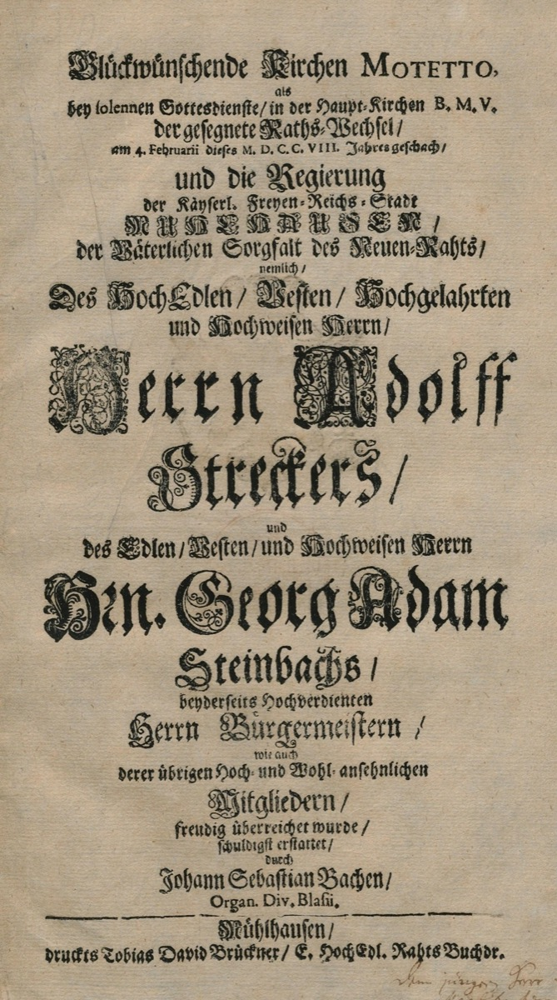

'Gott ist mein König': the only cantata Bach ever saw in print

Each February, the free imperial city of Mühlhausen inaugurated its new town council with a festival service — civic ritual and sacred ceremony fused, as they were everywhere in the old Empire's self-governing cities. On 4 February 1708 the music fell to the new organist of St. Blasius, and he did not treat it as a routine assignment. Gott ist mein König ("God is my king"), BWV 71, styled a motetto on its title page, called for four separated instrumental-vocal choirs — trumpets and drums; recorders and cello; oboes and bassoon; strings — deployed antiphonally around the church with organ, so that the music moved through the building's actual space. The texts were Psalms in praise of godly authority; one aria blessed the aged outgoing burgomaster by name, or near enough; the whole splendor was calibrated precisely to civic self-regard. A twenty-three-year-old commanding multi-choir spatial forces with total assurance, in music designed to make a town feel magnificent about itself — and the town did. The council loved the piece so much it voted to have the parts engraved and printed at municipal expense.
Sit with that printing, because it is a fact worth its weight in the entire timeline. Bach wrote perhaps three hundred sacred cantatas across his life; roughly two hundred survive; and of them all, BWV 71 is the only one published in his lifetime. Not the Passions, not the great Leipzig cycles, not any of the weekly miracles of his maturity — this festive civic piece by a twenty-three-year-old provincial organist. And it reached print not because any publisher saw a market for it, but because a proud town council wanted a keepsake of its own inauguration. The distinction matters enormously. When Bach did publish, decades later, it was keyboard music, issued mostly at his own expense for a market of players; the vocal music on which his posthumous supremacy rests lived and died, as far as his own century was concerned, in manuscript performing parts — copied by hand, filed in church cabinets, dispersed with estates. There was simply no commercial machinery in Germany for printing large sacred works, and no composer's genius could conjure one.
That is why this card carries a weight beyond its occasion: Arc II's whole eclipse story is folded inside it. When Bach died in 1750 and his reputation sank into eighty years of obscurity, the mechanism of the sinking was not a change of taste alone — it was that the music most capable of overwhelming posterity existed in a few perishable hand copies, while lesser work by better-published men circulated freely. The eclipse begins here, in 1708, in the economics of German music publishing, at the very moment of a triumph. The council's printed keepsake is the exception that maps the rule: what survives, and why, is never merely a function of merit. Fame has machinery, and in Bach's century the machinery did not run through church cantatas.
The piece itself, meanwhile, announces something about its composer that the documents of the next four months make explicit. The spatial choirs, the festival brass, the confident scale — this is not a man content to accompany hymns from an organ bench. It is church music conceived as grand public architecture, the largest thing the occasion allowed, and it gives concrete sound to the ambition Bach would name, four months later and in so many words, in the resignation letter: a well-regulated church music, on the grandest available scale, as his life's final purpose. BWV 71 is what that abstraction sounded like when a town briefly gave him the means. The printed parts survive — the young Bach's one lifetime appearance in published sacred music, purchased for him by civic pride — and every unprinted masterpiece that followed stands behind them like a shadow archive, waiting for the nineteenth century to come looking.
Continue with the era essay: Mühlhausen: the mission statement, or read the sentence the music was pointing toward: the Endzweck letter.
Printed parts of BWV 71, Mühlhausen 1708 (Bach Digital)
Wolff, The Learned Musician, ch. 5
→ full bibliography & links